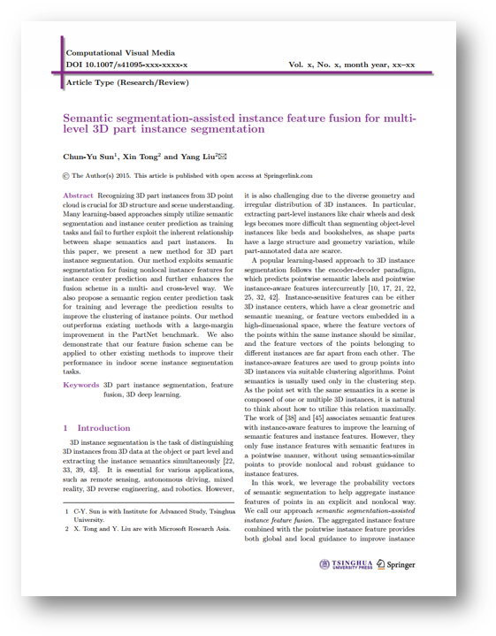

|
Semantic Segmentation-Assisted Instance Feature Fusion for Multi-level 3D Part Instance Segmentation |
|
Chun-Yu Sun 1
Xin Tong 2
Yang Liu 2
1 Tsinghua University 2 Microsoft Research Asia Computational Visual Media 2022 |

|
|  |
Paper [PDF] Code [Github] Citation [BibTeX] Chun-Yu Sun, Xin Tong and Yang Liu. 2022. Semantic Segmentation-Assisted Instance Feature Fusion for Multi-level 3D Part Instance Segmentation. Computational Visual Media. |